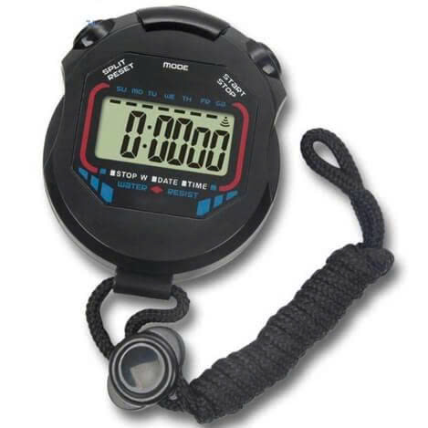
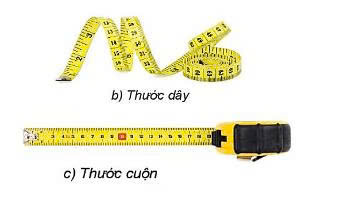
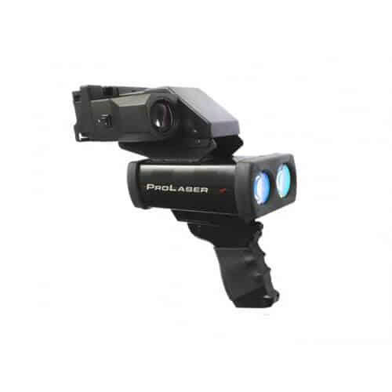

I. Đo tốc độ dùng đồng hồ bấm giây
a. Dụng cụ đo
- Đồng hồ bấm giây để đo thời gian chuyển động.
- Thước đo quãng đường chuyển động.
- Ví dụ: Thước thẳng, thước cuộn, thước dây,...


b. Cách đo
- Dùng thước đo quãng đường s, xác định vạch xuất phát và vạch đích.
- Dùng đồng hồ bấm giây đo thời gian t từ lúc vật bắt đầu chuyển động đến khi qua vạch đích.
- Tính tốc độ theo công thức v = s / t.
- Thực hiện phép đo 3 lần để lấy giá trị trung bình.
- Lập bảng ghi kết quả đo và tính tốc độ trung bình.
- Nhận xét kết quả đo.
II. Đo tốc độ dùng đồng hồ đo thời gian hiện số và cổng quang điện
a. Dụng cụ đo
- Đồng hồ đo thời gian hiện số.
- Cổng quang điện.
- Thước đo quãng đường.
b. Cách đo
- Xác định quãng đường s trên thước kim loại.
- Gắn cổng quang thứ nhất ở điểm đầu và cổng quang thứ hai ở điểm cuối.
- Khi bi sắt đi qua cổng quang thứ nhất, đồng hồ bắt đầu đo.
- Khi bi sắt đi qua cổng quang thứ hai, đồng hồ dừng đo.
- Bật đồng hồ ở chế độ A ↔ B.
- Thả bi sắt chuyển động qua hai cổng quang.
- Đọc thời gian t hiển thị trên đồng hồ.
- Tính tốc độ theo công thức v = s / t.
- Đo 3 lần, tính giá trị trung bình và nhận xét kết quả.
III. Thiết bị bắn tốc độ
Thiết bị bắn tốc độ được sử dụng để đo tốc độ của các phương tiện giao thông đường bộ.
Thiết bị giúp lực lượng chức năng kiểm tra và xử lí các phương tiện vi phạm tốc độ.

Ghi nhớ
- Tốc độ được tính theo công thức v = s / t.
- Có thể đo tốc độ bằng đồng hồ bấm giây hoặc đồng hồ đo thời gian hiện số kết hợp cổng quang điện.
- Đo nhiều lần và lấy giá trị trung bình giúp kết quả chính xác hơn.